Ткани

Шенилл
Это одна из самых популярных тканей в изготовлении мягкой мебели. Надо сразу отметить, что это натуральный материал (хлопок,вискоза), в который в незначительной мере добавлены искусственныеи синтетические волокна.
Если определять, как выглядит ткань шенилл, то это ворсовая ткань, мохнатые (начесанные) нити которой аккуратно наносятся на основные, что создает эффект ворса


Рогожка
Этот плотный, грубый материал получается в результате двойного или тройного переплетения нитей. В результате на поверхности полотна образуются крупные фактурные квадраты, расположенные в шахматном порядке.
Между тем тканая материя, которая используется при изготовлении мебели и домашнего текстиля, состоит из более мягких хлопчатобумажных, льняных, шелковых и шерстяных нитей. Поверхность полотна ворсистая, обладает шелковистым блеском


Жаккард
Это материал с крупными узорами, которые объемны на ощупь и придают особую роскошь. Это своего рода переплетение нитей, создающих тканый шедевр.
Ткань жаккард может быть изготовлена какиз натуральных волокон хлопка, льна, шелка, синтетических тканей или совмещать в себе много переплетений разного происхождения. Поэтому четко отнести ее к какой-либо группе тканей невозможно


 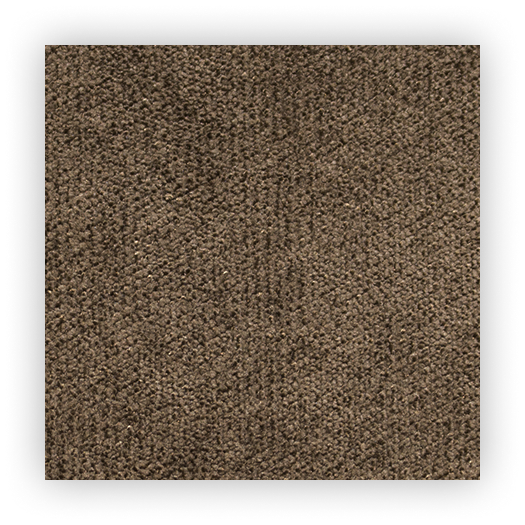
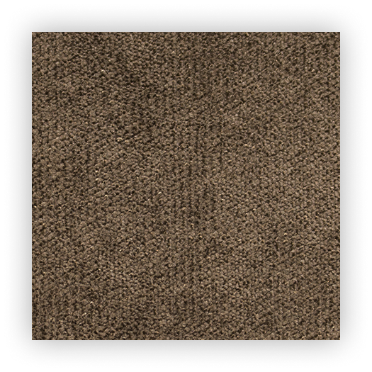 

Велюр
Бархатистая, приятная на ощупь, мягкая ткань. Ворс может быть расположен вертикально по всей ткани или на отдельных участках приглажен в одну сторону. Ворс отделывают тиснением, расчёсывают по трафарету или укладывают в виде разнообразных рисунков, поэтому велюр может быть гладким, фасонным, тиснёным и др. Для обивки мягкой мебели применяются велюры хлопчатобумажные и шерстяные
 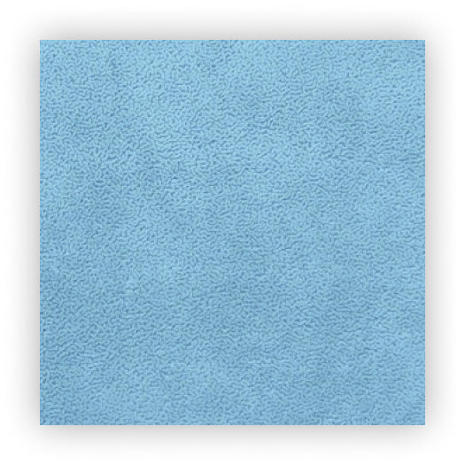 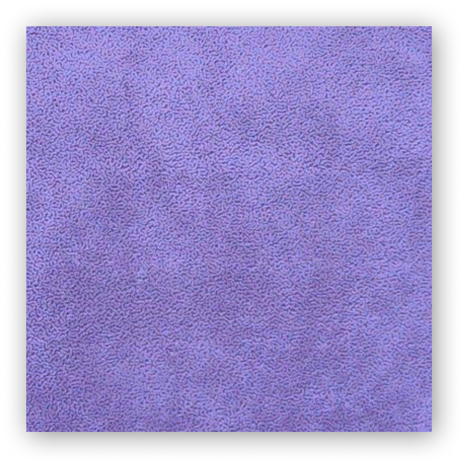
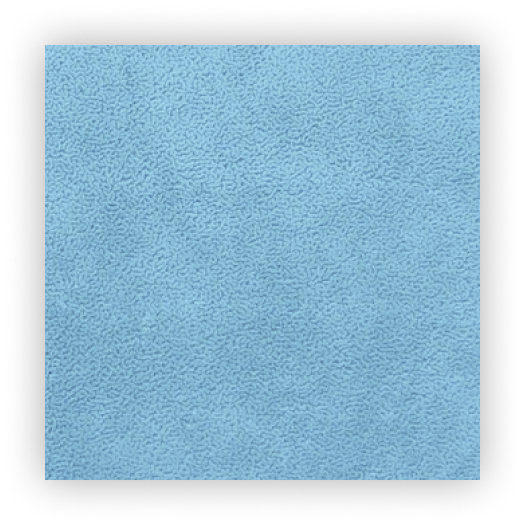 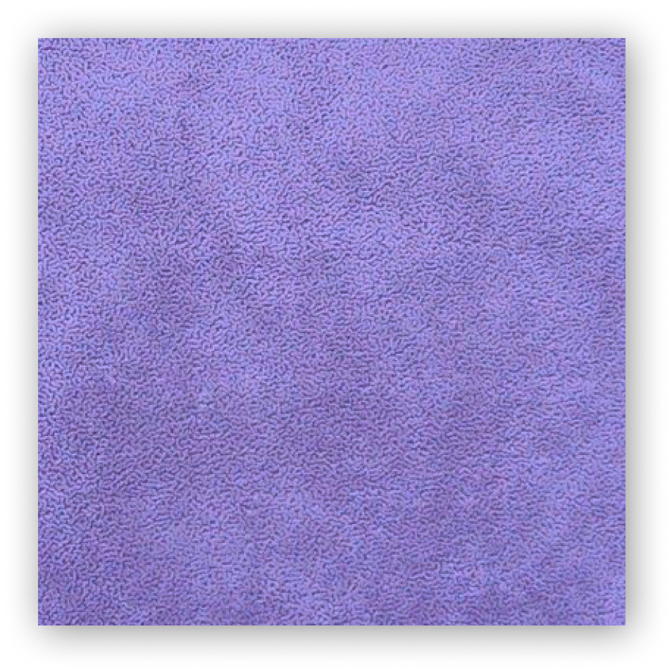 
Флок
Любая бархатистая поверхность вызывает только приятные тактильные ощущения. И флок – тканьне исключение. Недаром таким спросом пользуются диваны, кресла и пуфики с густым низким ворсом.
Все флоковые ткани производятся нетканными методами. Флок состоит из двух частей: основыи ворса. Основа может быть хлопком, полиэстером или нейлоном. На нее приклеивается ворсс помощью новых специальных технологий.
Готовый материал обрабатывается специальными составами, улучшающими его характеристики: придающими блеск, антистатические качества, водостойкость и т. д. Мебель, изготовленнаяиз флока, прослужит Вам длительное время
Кожа
Натуральная кожа
Кожа — прочный и гибкий долговечный материал, получаемый путём выделки шкур в условиях традиционного хозяйства или промышленного предприятия. Натуральная кожа является основным облицовочным материалом для изготовления высококачественной, «престижной» мягкой мебели
 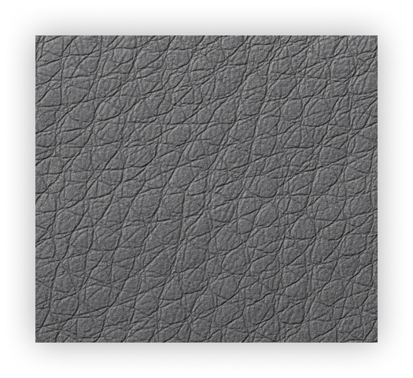
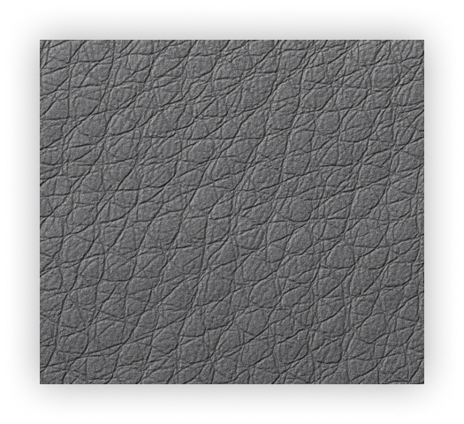  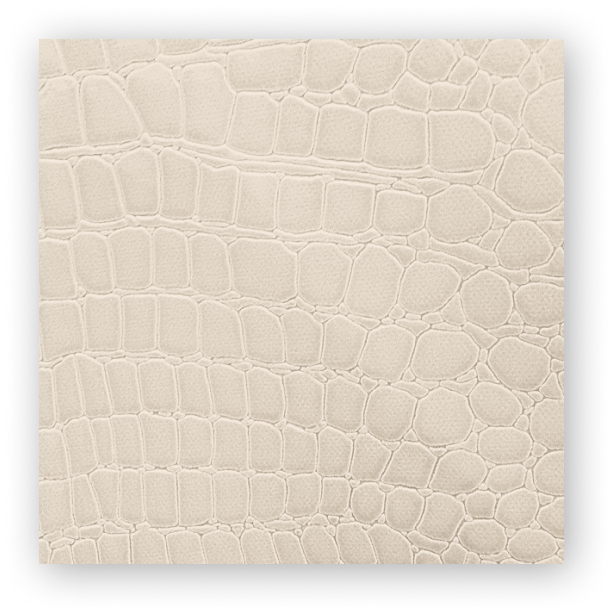
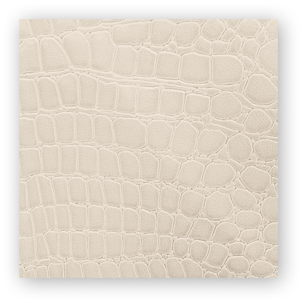Экокожа
Состоит из натуральной хлопковой основы — подложки, на которую нанесена полимерная пленка. Благодаря современным технологиям,на тканевой основе изделия никогда не заметишь каких-либо деформаций, а вот прочность, мягкость и эластичность присутствуют в полном объеме. Полиуретан обеспечивает материалу отличные эксплуатационные способности: не боится пониженной температуры, восстанавливается после небольших повреждений. При правильном уходе настоящая экокожа прослужит долго, радуя красивым внешним видом


 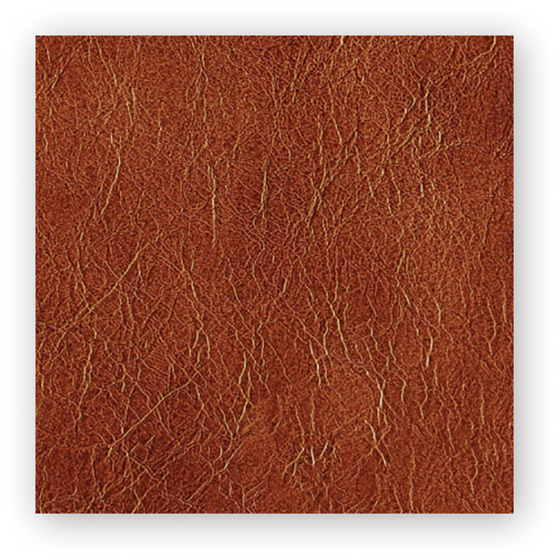
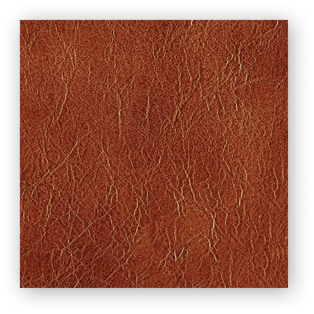Натуральная кожа
Искусственная кожа производится путем напыления специального полимера на тканевую основу. Такой вариант обработки позволяет получить материал, по качествам ничуть не уступающий натуральной коже. Она прекрасно подходит для отделки мягкой мебели